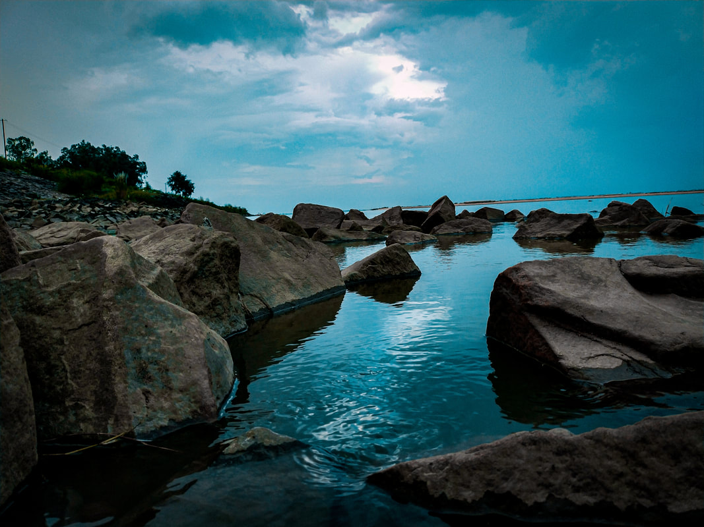

Sone River || Dehri

The Sone River: Life Blood of Dehri, Bihar
Dehri, a bustling industrial town in Bihar, India, finds its heart beating alongside the mighty Sone River. The Sone, stretching 784 kilometers, is one of the longest rivers in India and a vital source of life for the region.
Dehri's very name, Dehri-on-Sone, speaks to the town's deep connection to the river. The Sone's wide channel, particularly impressive at Dehri, has historically been prone to course changes. However, modern interventions like the Dehri anicut and the Indrapuri Barrage have helped stabilize its flow.
The Sone's significance goes beyond geography. It is a source of irrigation, feeding the Son canal system that nourishes the surrounding lands. The river also plays a role in Dehri's industrial development. The headworks of the Son canal system are located here, along with a hydroelectric dam.
The cultural and social life of Dehri is intertwined with the Sone. The river serves as a source of livelihood for many, with fishing being a traditional occupation. The riverbanks are likely bustling with activity, especially during festivals when people gather to celebrate and connect with nature.
However, the Sone also faces challenges. Like many rivers in India, it is susceptible to pollution and illegal sand mining. Efforts are underway to address these issues and ensure the river's health for future generations.
In conclusion, the Sone River is more than just a waterway for Dehri. It is the town's lifeblood, shaping its history, economy, and culture. Protecting the Sone is essential for safeguarding the well-being of Dehri and its people.
Farming || Dehri

Farming Potential in Dehri on Sone
Dehri on Sone's proximity to the Sone River and its fertile plains offer potential for various agricultural pursuits. Here's a breakdown of some possibilities:
**Traditional Farming:**
* **Crops:** The fertile land near the Sone can support a variety of crops depending on the season. Paddy (rice) is likely a staple, thriving in the well-irrigated plains. Other possibilities include wheat, pulses (lentils, chickpeas), oilseeds (mustard), and vegetables like onions, tomatoes, and potatoes.
* **Water Source:** The Sone River, supplemented by the Son canal system, provides a crucial water source for irrigation. This allows for multiple cropping cycles in a year, boosting agricultural productivity.
**Considering the presence of agricultural input suppliers like fertilizer dealers in Dehri [Justdial], there's likely a support system for traditional farming methods.**
**Alternative Farming Practices:**
Dehri could also explore some innovative farming practices:
* **Hydroponics:** Given Dehri's growing population and potential land scarcity, hydroponics - growing plants in water with nutrients - could be an interesting option. This method requires less space and water while offering high yields [Kryzen Biotech].
* **Poultry and Dairy:** Dairy and poultry farms like Kanhaiya Yadav Poultry Farm and Bhavesh Dairy Farm already exist in Dehri, indicating the potential for these sectors.
**Resources for Starting a Farm:**
* **Researching Local Conditions:** To get a better understanding of Dehri's specific agricultural landscape, consider contacting the local agriculture department or Krishi Vigyan Kendra (Farm Science Center) for advice on suitable crops and farming practices.
* **Market Research:** Understanding the local market demand for various agricultural products is crucial. Are there opportunities to sell directly to consumers or are there established mandis (wholesale markets)?
**Overall, Dehri on Sone has the potential to be a productive agricultural region. By leveraging traditional methods, exploring innovative techniques, and utilizing available resources, farmers in Dehri can contribute to the town's food security and economic growth.**